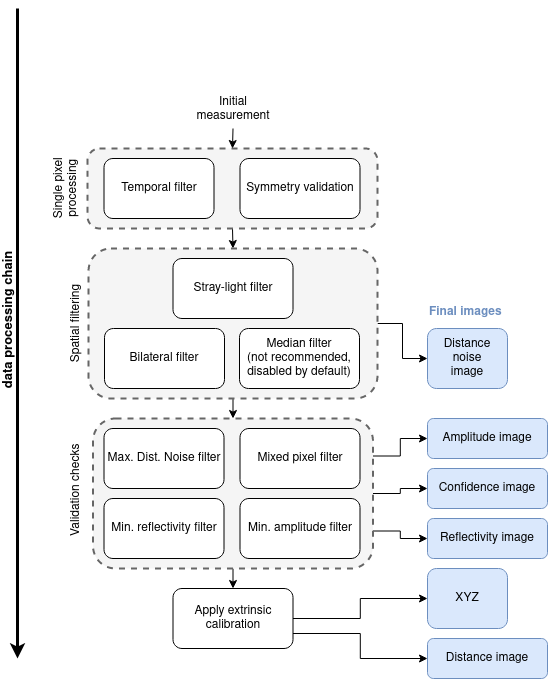

Filtering Process
This document details the filtering process applied to the O3R ToF data to produce distance measurements. Each filter listed below can be enabled, disabled or fine-tuned to better fit your application. Please read the detailed documentation for each filter (linked below) for more details.
